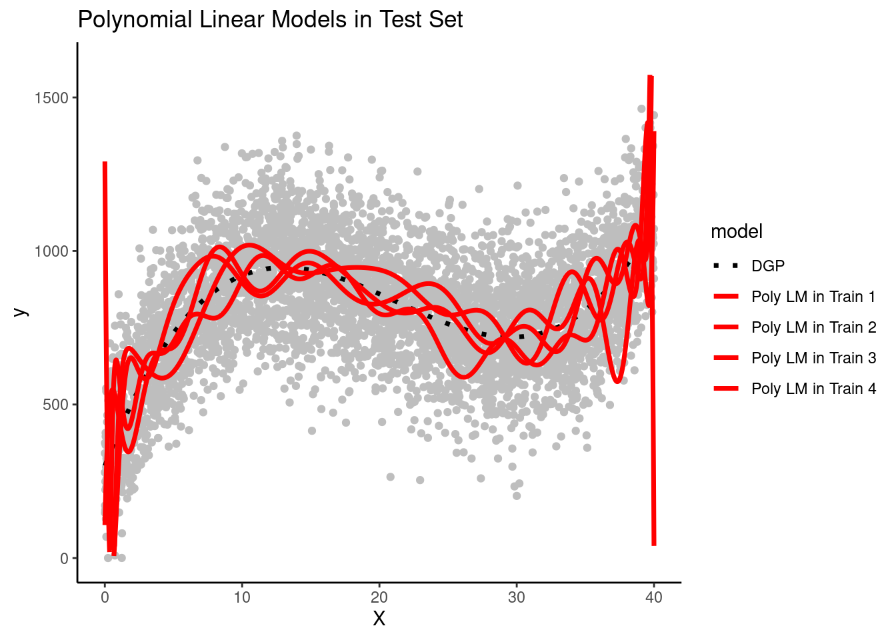

1 Overview of Machine Learning
1.1 Learning Objectives
- Understand uses for machine learning models
- Become familiar with key terminology (presented in bold throughout this unit)
- Understand differences between models
- Supervised vs. unsupervised
- Regression vs. classification
- Options for statistical algorithms
- Features vs. predictors
- Relationships between:
- Data generating processes
- Statistical algorithms
- Model flexibility
- Model interpretability
- Prediction vs. explanation
- Understand Bias-Variance Trade-off
- Reducible and irreducible error
- What is bias and variance?
- What affects bias and variance?
- What is overfitting and how does it relate to bias, variance, and also p-hacking
- Use of training and test sets to assess bias and variance
1.2 An Introductory Framework for Machine Learning
Machine (Statistical) learning techniques have developed in parallel in statistics and computer science
Techniques can be coarsely divided into supervised and unsupervised approaches
- Supervised approaches involve models that predict an outcome using features
- Unsupervised approaches involve finding structure (e.g., clusters, factors) among a set of variables without any specific outcome specified
- This course will focus primarily on supervised machine learning problems
- However supervised approaches often use unsupervised approaches in early stages as part of feature engineering
Examples of supervised approaches include:
- Predicting relapse day-by-day among recovering patients with substance use disorders based on cellular communications and GPS.
- Screening someone as positive or negative for substance use disorder based on their Facebook activity
- Predicting the sale price of a house based on characteristics of the house and its neighborhood
Examples of unsupervised approaches include:
- Determining the factor structure of a set of personality items
- Identifying subgroups among patients with alcohol use disorder based on demographics, use history, addiction severity, and other patient characteristics
- Identifying the common topics present in customer reviews of some new product or app
Supervised machine learning approaches can be categorized as either regression or classification techniques
- Regression techniques involve numeric (quantitative) outcomes.
- Regression techniques are NOT limited to “regression” (i.e., the general linear model)
- There are many more types of statistical models that are appropriate for numeric outcomes
- Regression techniques are NOT limited to “regression” (i.e., the general linear model)
- Classification techniques involve nominal (categorical) outcomes
- Most regression and classification techniques can handle categorical predictors
Among the earlier supervised model examples, predicting sale price was a regression technique and screening individuals as positive or negative for substance use disorder was a classification technique
1.3 More Details on Supervised Techniques
For supervised machine learning problems, we assume \(Y\) (outcome) is a function of some data generating process (DGP, \(f\)) involving a set of Xs (features) plus the addition of random error (\(\epsilon\)) that is independent of X and with mean of 0
\(Y = f(X) + \epsilon\)
Terminology sidebar: Throughout the course we will distinguish between the raw predictors available in a dataset and the features that are derived from those raw predictors through various transformations.
We estimate \(f\) (the DGP) for two main reasons: prediction and/or inference (i.e., explanation per Yarkoni and Westfall, 2017)
\(\hat{Y} = \hat{f}(X)\)
For prediction, we are most interested in the accuracy of \(\hat{Y}\) and typically treat \(\hat{f}\) as a black box
For inference, we are typically interested in the way that \(Y\) is affected by \(X\)
- Which predictors are associated with \(Y\)?
- Which are the strongest/most important predictors of \(Y\)
- What is the relationship between the outcome and the features associated with each predictor. Is the overall relationship between a predictor and \(Y\) positive, negative, dependent on other predictors? What is the shape of relationship (e.g., linear or more complex)?
- Does the model as a whole improve prediction beyond a null model (no features from predictors) or beyond a compact model?
- We care about good (low error) predictions even when we care about inference (we want small \(\epsilon\))
- They will also be tested with low power
- Parameter estimates from models that don’t predict well may be incorrect or at least imprecise
Model error includes both reducible and irreducible error.
If we consider both \(X\) and \(\hat{f}\) to be fixed, then:
- \(E(Y - \hat{Y})^2 = (f(X) + \epsilon - \hat{f}(X))^2\)
- \(E(Y - \hat{Y})^2 = [f(X) - \hat{f}(X)]^2 + Var(\epsilon)\)
\(Var(\epsilon)\) is irreducible
- Irreducible error results from other important \(X\) that we fail to measure and from measurement error in \(X\) and \(Y\)
- Irreducible error serves as an (unknown) bounds for model accuracy (without collecting additional Xs)
\([f(X) - \hat{f}(X)]^2\) is reducible
- Reducible error results from a mismatch between \(\hat{f}\) and the true \(f\)
- This course will focus on techniques to estimate \(f\) with the goal of minimizing reducible error
1.3.1 How Do We Estimate \(f\)?
We need a sample of \(N\) observations of \(Y\) and \(X\) that we will call our training set
There are two types of statistical algorithms that we can use for \(\hat{f}\):
- Parametric algorithms
- Non-parametric algorithms
Parametric algorithms:
- First, make an assumption about the functional form or shape of \(f\).
- For example, the general linear model assumes: \(f(X) = \beta_0 + \beta_1*X_1 + \beta_2*X2 + ... + \beta_p*X_p\)
- Next, a model using that algorithm is fit to the training set. In other words, the parameter estimates (e.g., \(\beta_0, \beta_1\)) are derived to minimize some cost function (e.g., mean squared error for the linear model)
- Parametric algorithms reduce the problem of estimating \(f\) down to one of only estimating some set of parameters for a chosen model
- Parametric algorithms often yield more interpretable models
- But they are often not very flexible. If you chose the wrong algorithm (shape for \(\hat{f}\) that does not match \(f\)) the model will not fit well in the training set (and more importantly not in the new test set either)
Terminology sidebar: A training set is a subset of your full dataset that is used to fit a model. In contrast, a validation set is a subset that has not been included in the training set and is used to select a best model from among competing model configurations. A test set is a third subset of the full dataset that has not been included in either the training or validation sets and is used for evaluating the performance of your fitted final/best model.
Non-parametric algorithms:
- Do not make any assumption about the form/shape of \(f\)
- Can fit well for a wide variety of forms/shapes for \(f\)
- This flexibility comes with costs
- They generally require larger \(N\) in the training set than parametric algorithms to achieve comparable performance
- They may overfit the training set. This happens when they begin to fit the noise in the training set. This will yield low error in training set but much higher error in new validation or test sets.
- They are often less interpretable
Generally:
- Flexibility and interpretability are inversely related
- Models need to be flexible enough to fit \(f\) well
- Additional flexibility beyond this can produce overfitting
- Parametric algorithms are generally less flexible than non-parametric algorithms
- Parametric algorithms can become more flexible by increasing the number of features (\(p\) from 610/710; e.g., using more predictors, more complex, non-linear forms to when deriving features from predictors)
- Parametric algorithms can be made less flexible through regularization. There are techniques to make some non-parametric algorithms less flexible as well
- You want the sweet spot for prediction. You may want even less flexible for inference in increase interpretability.
1.3.2 How Do We Assess Model Performance?
There is no universally best statistical algorithm
- Depends on the true \(f\) and your goal (prediction or inference)
- We often compare multiple statistical algorithms (various parametric and non-parametric options) and model configurations more generally (combinations of different algorithms with different sets of features)
- When comparing models/configurations, we need to both fit these models and then select the best one
Best needs to be defined with respect to some performance metric in new (validation or test set) data
- There are many performance metrics you might use
- Root Mean squared error (RMSE) is common for regression problems
- Accuracy is common for classification problems
We will learn many other performance metrics in a later unit
Two types of performance problems are typical
- Models are underfit if they don’t adequately represent the true \(f\), typically because they have oversimplied the relationship (e.g., linear function fit to quadratic DGP, missing key interaction terms)
- Underfit models will yield biased predictions. In other words, they will systematically either under-predict or over-predict \(Y\) in some regions of the function.
- Biased models will perform poorly in both training and test sets
- Models are overfit if they are too flexible and begin to fit the noise in the training set.
- Overfit models will perform well (too well actually) in the training set but poorly in test or validation sets
- They will show high variance such that the model and its predictions change drastically depending on the training set where it is fit
More generally, these problems and their consequences for model performance are largely inversely related
- This is known as the Bias-Variance trade-off
- We previously discussed reducible and irreducible error
- Reducible error can be parsed into components due to bias and variance
- Goal is to minimize the sum of bias and variance error (i.e., the reducible error overall)
- We will often trade off a little bias if it provides a big reduction in variance
But before we dive further into the Bias-Variance trade-off, lets review some key terminology that we will use throughout this course.
1.4 Key Terminology in Context
In the following pages:
- We will present the broad steps for developing and evaluating machine learning models
- We will situate key terms in this context (along with other synonymous terms used by others) and highlight them in bold.
Machine learning has emerged in parallel from developments in statistics and computer science.
- As a result, there is a lot of terminology and often multiple terms used for the same concept. This is not my fault!
- I will try to use one set of terms, but you need to be familiar with other terms you will encounter
When developing a supervised machine learning model to predict or explain an outcome (also called DV, label, output):
- Our goal is for the model to match as close as possible (given the limits due to irreducible error) the true data generating process for Y.
- We typically consider multiple (often many) candidate model configurations to achieve this goal.
Candidate model configurations can vary with respect to:
- the statistical algorithm used
- the algorithm’s hyperparameters
- the features used in the model to predict the outcome
Statistical algorithms can be coarsely categorized as parametric or non-parametric.
But we will mostly focus on a more granular description of the specific algorithm itself
Examples of specific statistical algorithms we will learn in this course include the linear model, generalized linear model, elastic net, LASSO, ridge regression, neural networks, KNN, random forest.
The set of candidate model configurations often includes variations of the same statistical algorithm with different hyperparameter (also called tuning parameter) values that control aspects of the algorithm’s operation.
- Examples include \(k\) in the KNN algorithm and \(lambda\) in LASSO, Ridge and Elastic Net algorithms.
- We will learn more about hyperparameters and their effects later in this course.
The set of candidate model configurations can vary with respect to the features that are included.
- A recipe describes how to transform raw data for predictors (also called IVs) into features (also called regressors, inputs) that are included in the feature matrix (also called design matrix, model matrix).
- This process of transforming predictors into features in a feature matrix is called feature engineering.
Crossing variation on statistical algorithms, hyperparameter values, and alternative sets of features can increase the number of candidate model configurations dramatically
developing a machine learning model can easily involve fitting thousands of model configurations.
In most implementations of machine learning, the number of candidate model configurations nearly ensures that some fitted models will overfit the dataset in which they are developed such that they capitalize on noise that is unique to the dataset in which they were fit.
For this reason, model configurations are assessed and selected on the basis of their relative performance for new data (observations that were not involved in the fitting process).
We have ONE full dataset but we use resampling techniques to form subsets of that dataset to enable us to assess models’ performance in new data.
Cross-validation and bootstrapping are both examples of classes of resampling techniques that we will learn in this course.
Broadly, resampling techniques create multiple subsets that consist of random samples of the full dataset. These different subsets can be used for model fitting, model selection, and model evaluation.
Training sets are subsets that are used for model fitting (also called model training). During model fitting, models with each candidate model configuration are fit to the data in the training set. For example, during fitting, model parameters are estimated for regression algorithms, and weights are established for neural network algorithms. Some non-parametric algorithms, like k-nearest neighbors, do not estimate parameters but simply “memorize” the training sets for subsequent predictions.
Validation sets are subsets that are used for model selection (or, more accurately, for model configuration selection). During model selection, each (fitted) model — one for every candidate model configuration — is used to make predictions for observations in a validation set that, importantly, does not overlap with the model’s training set. On the basis of each model’s performance in the validation set, the relatively best model configuration (i.e., the configuration of the model that performs best relative to all other model configurations) is identified and selected. If you have only one model configuration, validation set(s) are not needed because there is no need to select among model configurations.
Test sets are subsets that are used for model evaluation. Generally, a model with the previously identified best configuration is re-fit to all available data other than the test set. This fitted model is used to predict observations in the test set to estimate how well this model is expected to perform for new observations.
There are three broad steps to develop and evaluate a machine learning model:
Fitting models with multiple candidate model configurations (in training set(s))
Assessing each model to select the best configuration (in validation set(s))
Evaluating how well a model with that best configuration will perform with new observations (in test sets(s))
1.5 An Example of the Bias-Variance Trade-off
1.5.1 Overview of Example
The concepts of underfitting vs. overfitting and the bias-variance trade-off are critical to understand
It is also important to understand how model flexibility can affect both the bias and variance of that model’s performance
It can help to make these abstract concepts concrete by exploring real models that are fit in actual data
We will conduct a very simple simulation to demonstrate these concepts
The code in this example is secondary to understanding the concepts of underfittinng, overfitting, bias, variance, and the bias-variance trade-off
- We will not display much of it so that you can maintain focus on the concepts
- You will have plenty of time to learn the underlying
When modeling, our goal is typically to approximate the data generating process (DGP) as close as possible, but in the real world we never know the true DGP.
A key advantage of many simulations is that we do know the DGP because we define it ourselves.
- For example, in this simulation, we know that \(Y\) is a cubic function of \(X\) and noise (random error).
- In fact, we know the exact equation for calculating \(Y\) as a function of \(X\).
- \(y = 1100 - 4.0 * x - 0.4 * x^2 + 0.1 * (x - h)^3 + noise\), where:
b0 = 1100b1 = -4.0b2 = -0.4b3 = 0.1h = -20.0- noise has
mean = 0andsd = 150
We will attempt to model this cubic DGP with three different model configurations
- A simple linear model that uses only \(X\) as a feature
- A (20th order) polynomial linear model that uses 20 polynomials of \(X\) as features
- A (20th order) polynomial LASSO model that uses the same 20 polynomials of \(X\) as features but “regularizes” to remove unimportant features from the model
The simple linear model will underfit the true DGP and therefore it will be biased b/c it can only represent Y as a linear function of X.
The two polynomial models will be generally unbiased b/c they have X represented with 20th order polynomials.
LASSO will be slightly biased due to regularization but more on that in a later unit.
1.5.2 Stimulation Steps
With that introduction complete, lets start our simulation of the bias-variance trade-off
- Lets simulate four separate research teams, each working to estimate the DGP for Y
- Each team will get their own random sample of training data (N = 100) to fit models
- Here are plots of these four simulated training sets (one for each team) with a dotted line for the data generating process (DGP)


- We get one more large random sample (N = 5000) with the same DGP to use as a test set to evaluate all the models that will be fit in the separate training sets across the four teams.
- We will let each team use this same test set to keep things simple
- The key is that the test set contains new observations not present in any of the training sets
Each of the four teams fit their three model configurations in their training sets
They use the resulting models to make predictions for observations in the same training set in which they were fit

The simple linear model is clearly biased. It systemically underestimates Y in some portions of the X distribution and overestimates Y in other portions of the X distribution. This is true across training sets for all teams.
The polynomial linear model appears to overfit the data in the training set. In other words, it seems to follow both the signal/DGP and the noise. However, in practice none of the teams could not be certain of this with only their training set.
It is possible that the wiggles in the prediction line represent the real DGP. They need to look at the model’s performance in the test set to be certain about the degree of overfitting. (Of course, we know because these are simulated data and we know the DGP.)
- Now the teams use their 3 trained models to make predictions for new observations in the test set
Remember that the test set has NEW observations of X and Y that weren’t used for fitting any of the models.
Lets look at each model configuration’s performance in test separately
- Here are predictions from the four simple linear models (fit in the training sets for each team) in the test set
Yes, consistent with what we saw in the training sets, the simple linear model systematically overestimates Y in some places and underestimates it in others. The DGP is clearly NOT linear but this simple model can only make linear predictions. It is a fairly biased model that underfits the true DGP. This bias will make a large contribution to the reducible error of the model
There is not much variance in the prediction lines across the models that were fit by different teams in different training sets. The slopes are very close across the different team’s models and the intercepts only vary by a small amount. The simple linear model configuration does not appear to have high variance (across teams) and therefore model variance will not contribute much to its reducible error.
- Here are predictions from the polynomial linear models from the four teams in the test set

There is not much systematic bias. The overall function is generally cubic for all four teams - just like the DGP. Bias will not contribute much to the model’s reducible error.
There is much higher model variance for this polynomial linear model relative to the simple linear model. Although all four models generally predict Y as a cubic function of X, there is also a non-systematic wiggle that is different for each team’s models.
Model variance (across teams) is a result of overfitting to the training set. If a model fits noise in its training set, that noise will be different in every dataset. Therefore, you end up with different models depending on the training set in which they are fit. And none of those models will do well with new data as you can see in this test set because noise is random and different in each dataset.
- Here are predictions from the polynomial LASSO models from each team in the test set

The LASSO models have low bias much like the polynomial linear model. They are able to capture the true cubic DGP fairly well. The regularization process slightly reduced the magnitude of the cubic (the prediction line is a little straighter than it should be), but not by much.
All four LASSO models, fit in different training sets, resulted in very similar prediction lines. Therefore, these LASSO models have low variance, much like the simple linear model. In contrast, the LASSO model variance is clearly lower than the more flexible polynomimal model.
- Now we will quantify the performance of these models in training and test sets with the root mean square error performance metric. This is the standard deviation of the error when comparing the predicted values for Y to the actual values (ground truth) for Y.
The simple linear model is underfit to the TRUE DGP. Therfore it is systematically biased everywhere it is used. It won’t fit well in train or test for this reason. However, it’s not very flexible so it won’t be overfit to the noise in train and therefore should fit comparably in train and test.
The polynomial linear model will not be biased at all given that the DGP is polynomial.
However, it is overly flexible (20th order) and so will substantially overfit the training data such that it will show high variance and its performance will be poor in test.
The polynomial LASSO will be the sweet spot in bias-variance trade-off. It has a little bias but not much. However, it is not as flexible due to regularization by lambda so it won’t be overfit to its training set. Therefore, it should do well in the test set.
To better understand this:
- Compare RMSE across the three model configurations within the training sets (turquoise line)
- Compare how RMSE changes for each model configuration across its training set and the test set
- Compare RMSE across the three model configurations within the test set (red line)?
- Specifically compare the performance of simple linear model (least flexible) with the polynomial linear model (most flexible)
No. A model configuration needs to be flexible enough and/or well designed to represent the DGP for the data that you are modeling. The two polynomial models in this example were each able to represent a cubic DGP. The simple linear model was not. The polynomial linear model was too flexible for a cubic given that it had 20 polynomials of X. Therefore, it was overfit to its training set and had high variance. However, if the DGP was a different shape, the story would be different. If the DGP was linear the simple linear model would not have been biased and would have performed best. If this DGP was some other form (step function), it may be that none of the models would work well.